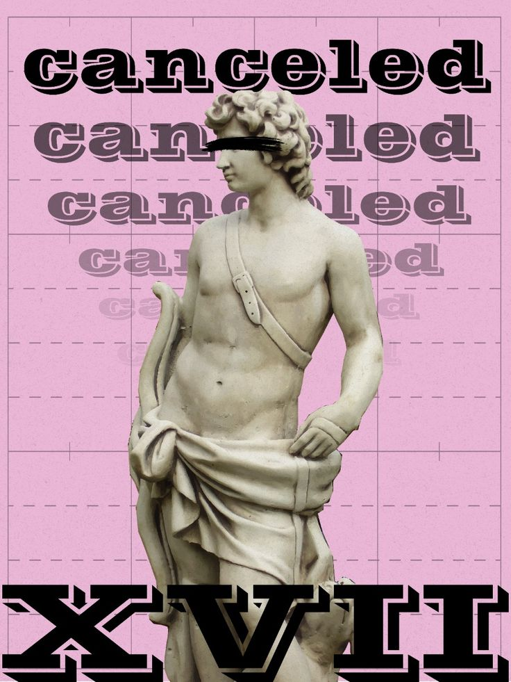

CANCEL CULTURE
Why You May Not Know It’s an American Tradition

Where the Line Actually Is
This is where the modern conversation becomes particularly difficult. Americans increasingly describe speech as harmful, and sometimes that description is entirely reasonable. Speech can reveal private information, facilitate harassment, make false factual accusations, or contribute to an environment in which people are targeted. At the same time, almost any political argument can be described as harmful by someone who strongly disagrees with it. An abortion-rights argument can be considered harmful by an opponent who believes abortion is the killing of an innocent person, while an abortion restriction can be considered harmful by someone who believes the restriction violates bodily autonomy. A gun-rights argument can be considered harmful by someone concerned about firearm violence, while a gun-control argument can be considered harmful by someone who believes restrictions endanger the ability to defend oneself. If “harm” simply means something I believe produces a bad outcome, then virtually every political argument becomes harmful, and that cannot be a sufficient standard for deciding which political speech deserves protection.
A better question is more specific: Whose rights are involved, and what exactly is being done to them? If someone expresses an unpopular opinion, the analysis should begin by asking whether the expression itself violates anyone's rights. If someone threatens another person, the analysis changes. If someone commits violence, it changes again. If someone uses government authority to suppress political expression, the constitutional question becomes different still. These distinctions do not require us to approve of offensive speech or excuse harmful conduct. They require us to distinguish between categories rather than allowing our emotional reaction to determine the legal or moral category.
That distinction becomes especially important when the person involved is someone we dislike. It is precisely when our political emotions are strongest that we are most tempted to abandon the standards we would apply in another case.
Imagine drawing a line between disagreement, criticism, persuasion, protest, and voluntary economic choice on one side, and threats, coercion, unlawful conduct, and violence on the other. Government power introduces another major boundary because government is constrained by constitutional rules that generally do not apply to ordinary private disagreements in the same way. The line will not always be easy to see, but the existence of difficult cases does not eliminate the need to look for it. 1·2·3·4·5
The real test is what happens when we put our principles under pressure. Apply the same standard to a cause you support and to one you oppose. Does the line move?
If it does, then you are not really defending a principle; you are defending an outcome. That may be perfectly honest, but it is something different, and Higher Ideals should ask for more. A principle worth defending has to survive the possibility that someone you strongly disagree with will one day rely upon it.
At the same time, we should resist the temptation to turn this into a set of absolute rules that solve every case automatically. Context matters. A private employer's decision can involve employment law. A protest can involve questions about public spaces, access, and safety. A boycott can involve complicated questions of association and collective action. A government restriction can involve competing constitutional interests. Speech can move from protected expression into legally actionable conduct depending upon what was said, how it was communicated, and the surrounding circumstances.
That means the line we are looking for is not a simple division between people who are “good” and people who are “bad,” or between speech that makes us comfortable and speech that makes us angry. It is a line between different kinds of conduct, different kinds of power, different rights, and different consequences. The challenge is not to pretend that every case has an easy answer. The challenge is to care enough about the distinction that we do not let our political instincts decide the answer before we have even asked the question.
Why This Matters to Cancel Culture
This brings us back to the phrase that started the article. “Cancel culture” is often used as though it describes one specific activity, but in reality the term can encompass a wide range of behavior: public criticism, social-media campaigns, boycotts, demands for accountability, professional consequences, efforts to remove people from platforms, and sometimes accusations of censorship. Different people use the phrase differently, which is one reason Americans frequently argue about cancel culture without actually agreeing on what they mean. One person may use the phrase to describe nothing more than a public backlash against something offensive. Another may use it to describe an organized effort to have someone fired. Another may mean an attempt to remove someone from a social-media platform, while another may be talking about government action. If we treat all of those things as though they are one phenomenon, we lose the distinctions that actually determine whether a particular action is legitimate.
The history makes the problem clearer. America has always had collective pressure, public shaming, boycotts, political retaliation, propaganda, and attempts to silence opponents. Political movements have tried to persuade people to withdraw their support from businesses, organizations, publications, candidates, and public figures. Communities have ostracized people. Employers and institutions have responded to controversy. Political opponents have attempted to damage one another's reputations. None of that began with Twitter, Facebook, or TikTok. What has changed is the speed, scale, permanence, and reach of modern communication. Social media did not invent the impulse to punish or pressure people for political and cultural behavior; it gave that impulse a dramatically more powerful set of tools.
That difference in technology matters. A controversy that once might have remained local can become national within hours. A statement made to a few people can be detached from its original setting, reproduced thousands of times, and presented to audiences who have no knowledge of the circumstances in which it was made. A campaign that once required newspapers, meetings, letters, telephone calls, or physical organizing can now be assembled with a few posts and amplified by algorithms and large networks of followers. The permanence matters as well. Something that once might have disappeared from public attention can remain available, searchable, and capable of being revived years later. The technology has therefore changed not only how quickly people can respond, but how far their response can travel and how long its consequences can last. 6·7
But greater power does not automatically mean greater legitimacy. In fact, the more powerful the tools become, the more important it is to think carefully about how they are used. The ability to mobilize thousands of people against someone does not by itself tell us whether mobilizing thousands of people is justified. A large number of people can be correct about something, but a large number of people can also be angry, mistaken, misinformed, or responding to an incomplete version of events. Popularity is not the same thing as truth, and the ability to generate enormous pressure does not by itself establish that the pressure should be exercised.
That brings us to another question we should add to the line: proportion. Even when an action is lawful, we can still ask whether the response is proportionate to the conduct. A person makes a foolish comment and ten people criticize it; that is one thing. A person makes a foolish comment and thousands of strangers attempt to destroy every aspect of that person's personal and professional life; that is another. The distinction is not simply about whether we personally like the target or agree with the criticism. It is about whether the response being demanded bears some reasonable relationship to what actually occurred.
Proportion, however, cannot become another excuse for pretending that there is an easy formula. What one person considers disproportionate, another may consider accountability. There is no universal formula for determining the appropriate social response to every offensive statement. Context, repetition, position of authority, professional responsibilities, actual harm, and many other circumstances can matter. A careless remark is not necessarily the same thing as a repeated pattern of conduct. A private citizen is not necessarily situated the same way as someone exercising authority over other people. An offensive opinion is not automatically equivalent to conduct that violates another person's rights. And an action that produces an uncomfortable consequence is not automatically an unjust punishment simply because the person receiving the consequence describes it that way.
The reverse is also true. Calling something “accountability” does not settle the question either. Accountability is an important concept, but it can become a rhetorical shortcut if we use the word without explaining what the person is actually being held accountable for. Accountable to whom? For what conduct? Under what rule or standard? With what evidence? And what consequence is being demanded? If those questions cannot be answered, then the word may be functioning more as a declaration of moral certainty than as an explanation of what should actually happen.
This is particularly important because the word “canceled” can blur the difference between voluntary pressure and coercive power. A person can decide not to watch a program, buy a product, attend a performance, donate to an organization, or support a candidate. A group can encourage other people to make the same decision. Advertisers can reconsider where they spend their money. A private organization can decide that someone's conduct is inconsistent with its standards. A platform can enforce its rules. A government can exercise legal authority. All of those actions can produce consequences, but they do not involve the same actor, the same relationship, the same authority, or the same rights.
The distinction matters because not all forms of power are the same. If I decide that I no longer want to support someone, I am exercising control over my own participation. If I persuade ten other people to make the same choice, I am exercising political or economic influence over a voluntary association of people. If an employer disciplines someone, the employer is exercising institutional authority within a particular relationship. If the government threatens someone with legal punishment because of political expression, the government is exercising coercive state power. Those actions can all be controversial, but collapsing them into the single word “cancellation” prevents us from asking the questions that should determine how we judge them.
That may be the most important question we can carry forward: What are you actually protecting?
When you want someone punished, what are you protecting? When you want someone silenced, what are you protecting? When you want a company boycotted, what are you protecting? When you want government intervention, what are you protecting, and whose rights are affected by the action you are demanding? The questions are deliberately repetitive because the answer cannot simply be assumed from the righteousness of the cause. We have to identify the actual interest at stake.
Sometimes the answer will be another person's safety. Sometimes it will be equality under the law. Sometimes it will be protection from discrimination, harassment, or other conduct that creates a legitimate institutional concern. Sometimes it will be a legitimate institutional interest: an employer protecting its workplace, a professional organization enforcing standards, or a private organization deciding what conduct it will permit within its own operation. Those are all potentially serious interests. They deserve to be considered on their actual facts rather than dismissed merely because the resulting consequence is uncomfortable.
But sometimes the answer will be much less principled. Sometimes what we are protecting is our own sense of outrage. Sometimes it is our political tribe. Sometimes it is our desire to see someone we dislike suffer consequences. Sometimes the real objective is not to correct conduct, protect another person's rights, or defend a legitimate institutional interest, but to make an opponent disappear from the conversation altogether. That distinction can be uncomfortable because people rarely describe their own motives that way. We are much more likely to describe our actions in terms of justice, accountability, safety, or principle.
Those motivations can look remarkably similar from the outside. Two groups can demand that the same kind of person lose a job, a platform, a contract, or an audience. One may genuinely believe the demand is necessary to protect others. The other may simply want political opponents punished. The outward behavior can look almost identical while the underlying justification is completely different. We cannot judge an exercise of power by the language used to justify it alone.
We have to examine the facts, the authority being exercised, the rights involved, and the actual consequence being sought.
This is also where the consistency test becomes more difficult than simply asking whether we agree with the objective. It is easy to defend pressure when the person being pressured represents everything we oppose. It is harder to ask whether the same method should be available to people we distrust, or whether we would still consider the method legitimate if they controlled the institution, the platform, the employer, or the government. But that is precisely why the test matters. A principle that only works when our side controls the power is not much of a principle at all.
None of this means that people should be required to tolerate everything. A free society does not require people to remain silent when they believe something is wrong. It does not require consumers to continue spending money with businesses they oppose. It does not require organizations to associate with people whose conduct violates legitimate standards. It does not require citizens to withhold criticism simply because the target finds that criticism unfair or uncomfortable. Political conflict has always involved pressure, persuasion, protest, economic action, and demands for consequences.
The point is that the existence of a legitimate form of pressure does not automatically legitimize every escalation of that pressure. Criticism is not the same thing as punishment. A boycott is not the same thing as a government prohibition. An employer's decision is not the same thing as state retaliation. The Cornell/Wells Fargo example illustrates why that distinction matters: a private employer's decision can be controversial, consequential, and worthy of criticism without becoming an exercise of government censorship. A demand for accountability is not automatically a demand for silence. And the fact that one of these actions is justified in a particular case does not mean that every more powerful action that follows from the same anger is justified.
The more power we seek to exercise over another person, the more important it becomes to explain exactly what we are asking for and why. If we are asking people to hear an argument, that is one thing. If we are asking them to withdraw their voluntary support, that is another. If we are asking an institution to impose a consequence, we should be able to identify the institution's legitimate authority to do so. If we are asking the government to intervene, the burden becomes still more serious because government possesses powers that private citizens and organizations do not.
The phrase “cancel culture” can therefore be useful as a starting point, but it is a poor stopping point. It tells us that someone has experienced some form of collective pressure or consequence, but it does not tell us whether that pressure consisted of criticism, persuasion, economic choice, institutional discipline, platform moderation, coercion, or government action. Those distinctions are not technicalities. They are the substance of the argument.
That brings us to the next question: if the line is not simply between “cancel culture” and “not cancel culture,” and political pressure is not inherently illegitimate, what line should we actually be looking for?
The Line Is Not About Being Nice
The line we are looking for is therefore not a line between kindness and cruelty. Politics is not always kind, and movements that changed American history were often confrontational. Abolitionists deliberately challenged the moral assumptions of their society. Civil Rights activists deliberately disrupted ordinary economic and political routines. Suffragists deliberately made political leaders uncomfortable.
The goal is not to make political conflict polite. The goal is to keep political conflict political. That means fighting over ideas, institutions, laws, elections, policies, markets, and public opinion without turning every opponent into an enemy whose rights can be ignored.
What Are You Actually Asking For?
We can now return to the question that has followed us through nearly every chapter of this article. When you say you want someone “canceled,” what do you actually mean? Do you want people to know what the person said or did? Do you want people to stop supporting them? Do you want a company or organization to reconsider its relationship with them? Do you want a private platform to remove them? Do you want an employer to discipline them? Do you want the government to prevent them from speaking, prosecute them, or impose some other penalty?
Those are not interchangeable demands. They may all be described with the same word—“canceled”—but they involve very different kinds of power. A person deciding not to watch a program is exercising a different kind of power from an organized boycott. A boycott is different from demanding that an employer fire someone. An employer's decision is different from a private platform's moderation decision. And all of those are fundamentally different from asking the government to punish someone for what they said. The more power we seek to exercise over another person, the more important it becomes to explain exactly what we are asking for and why.
That is why the phrase “cancel culture” can become less useful the more closely we examine an individual case. It can describe a consumer boycott, a social-media campaign, a demand for accountability, an employer's decision, a platform's moderation policy, an organized effort to pressure advertisers, or a government action. Those things may look similar from a distance because they can all produce consequences for a person or organization, but they involve different actors, different kinds of authority, and different questions about rights.
Sometimes what people are asking for is simply to be heard. A person says something they believe is offensive, dishonest, discriminatory, hypocritical, or dangerous, and they want the public to know about it. They share the statement, provide context, explain why they object, and encourage other people to consider the evidence. That is advocacy. It may be aggressive advocacy, and the person being criticized may strongly object, but public argument is part of a free society.
Much of American political history works this way. Abolitionists published arguments designed to make slavery impossible to ignore. Civil Rights activists publicized discriminatory treatment that many Americans had previously been able to ignore. Investigative journalists have exposed government misconduct, corporate wrongdoing, and institutional failures. Protest movements have deliberately brought uncomfortable subjects into public view because they believed the existing political system was refusing to address them. The first question, therefore, should not be whether criticism is uncomfortable. It should be whether the criticism is grounded in something that can actually be examined.
Sometimes the request is different. Perhaps you want people to withdraw their support. You do not want anyone to watch the person's program, purchase their products, attend their performances, donate to their organization, or vote for their candidate. Perhaps you want advertisers to reconsider where they spend their money. Perhaps you are organizing a boycott because you believe the person or institution has violated a principle important enough to justify withdrawing your own support and encouraging others to do the same.
Consider the recent controversy surrounding a Cornell student accused of participating in an alleged sexual assault. After prosecutors reopened the investigation, reports emerged that one of the accused, Diego Sarabia, was no longer employed by Wells Fargo. The circumstances of his departure have not been publicly established in full, and the allegations remain allegations rather than a criminal conviction. Wells Fargo has not publicly confirmed his employment status or the reason for his departure. 23·24·25·26·27·28
But the case presents an important question for the discussion here: if a private employer decides that it no longer wants to employ someone because of serious allegations about his conduct, is that “cancel culture,” or is it a private institution exercising its own authority?
If an employee of a private company—because of alleged conduct or otherwise—brings unwanted negative attention to that company, isn't it within that company's lawful authority to decide that it no longer wants to employ that person? Especially if the controversy is costing the company customers, business relationships, or money? Or, at some point, does the pressure being brought against the company itself become something different: an attempt to force a private institution to act through unlawful threats, coercion, harassment, or other means that go beyond ordinary public pressure?
The answer cannot depend solely on how severe the consequence is. Losing a job can be enormously consequential. The more useful question is who is imposing the consequence, what authority that institution possesses, what evidence it is relying upon, and what rights are implicated. A private employer is not the government. Its decision may be criticized as unfair, premature, or unjust without becoming government censorship. At the same time, the fact that an institution has the legal authority to make a decision does not make the decision automatically wise or morally beyond question.
That distinction matters because the same principle has to work in cases where we dislike the person involved. If we believe a private employer has the right to make its own employment decisions when serious allegations become public, we should be prepared to defend that principle when the accused person is politically sympathetic to us. If we believe an employer should wait for a criminal conviction before acting, we should be prepared to apply that standard consistently as well. The Consistency Test does not tell us which decision Wells Fargo should make. It asks whether the principle we use to judge that decision is one we would accept when the political identities are reversed.
That, too, is a familiar form of American political action. Revolutionaries used economic pressure against British goods. Abolitionists developed free-produce campaigns. Civil Rights activists used boycotts to challenge segregation. Labor movements have repeatedly used consumer pressure and boycotts as organizing tools. The underlying principle is straightforward: you control your own participation and, within the law, you can encourage other people to make their own choices as well. 8·9·10·11·12
That does not guarantee the target will consider the campaign fair. It does not guarantee the campaign will succeed. It does not even guarantee that the underlying argument is correct. It simply recognizes that voluntary economic and social choices are themselves forms of political power. A person is free to persuade others not to buy something, just as others are free to reject that persuasion. The exercise of that power can be consequential without becoming coercive.
The situation becomes more complicated when the request is directed toward an institution. Perhaps you want an employer to discipline an employee, a university to cancel an event, a television network to end a program, a publisher to drop an author, or a professional organization to sever a relationship. Sometimes that request concerns a legitimate institutional interest. Organizations have rules, employees have responsibilities, and institutions have the ability to decide whom they want representing them. Depending on the circumstances, employment law, contracts, nondiscrimination rules, or other legal protections may also apply.
But the existence of a legitimate institutional decision does not automatically make every demand for institutional punishment legitimate. An institution can be pressured into making a decision based on inaccurate information, an exaggerated accusation, or a political campaign designed simply to make someone suffer. That is why the question should remain focused on the actual conduct and the actual rules rather than the political identity of the person involved. If an institution has a legitimate reason to act, that reason should be capable of being explained without relying on tribal loyalty.
Another important question is what it means to silence someone.
There is a difference between saying, “I don't want to hear this,” and saying, “Nobody should be allowed to hear this.” The first is an exercise of personal choice. The second is an attempt to control other people's access to information or expression. That distinction becomes especially important when the government is involved, because the First Amendment generally restricts government interference with protected expression. Private organizations have different legal relationships to speech, and private platforms or institutions may have their own rules, subject to applicable law. That distinction does not give government officials a free pass to use private institutions as proxies for suppressing expression the government could not lawfully suppress itself.
The important point is that silence is not one thing. A person can choose not to listen. A private institution can make editorial or organizational decisions. A crowd can criticize. A government can attempt to prohibit. Those actions may produce similar results from the perspective of the speaker, but they involve fundamentally different forms of power. Treating them as interchangeable because they all make someone feel “cancelled” obscures the very distinctions that matter.
The same problem appears with the word “accountability.” Accountability has become one of the most common words in this debate, for good reason: people sometimes use collective pressure because they believe someone has done something wrong and should face consequences.
They are not necessarily trying to suppress an opinion; they are trying to expose conduct they believe deserves a response.
But accountability is not a magic word. Calling something accountability does not automatically make it accountability. The same action can be described as accountability by one person and retaliation by another. The difference has to be established through the facts. What happened? What rule was violated? Who was harmed? What evidence exists? What process was followed? What consequence is being demanded? If we skip those questions, “accountability” can become another political label rather than an explanation.
Sometimes, if we are being honest with ourselves, what we want is punishment.
We may want someone to lose a job, lose a contract, lose an audience, lose a platform, lose professional opportunities, or experience financial consequences because of something they said or did. There may be circumstances in which consequences are justified, particularly when someone violates legitimate rules or harms another person. But if the actual objective is punishment, we should be willing to say so.
That honesty matters because punishment carries a different moral and political weight than disagreement. Once we acknowledge that punishment is the objective, we have to ask who is imposing it, under what authority, according to what standard, and whether we would accept the same process if our political opponents controlled it. The Consistency Test becomes especially important here. A standard that seems reasonable when applied to someone we dislike may look very different when the same power is placed in the hands of someone whose politics we oppose.
And then we reach the most consequential question of all: Are you asking the government to do it? If your argument is that a person should lose their audience, customers, or social standing, you are asking fellow citizens to exercise private power. If you are asking a private institution to make a decision, you are asking an organization to exercise its own authority. But if you are asking the government to punish someone for protected political expression, you are asking the state to use coercive power.
Government has legitimate authority to enforce laws and protect rights. It can prosecute crimes, regulate certain conduct, and impose legally authorized penalties. But government power is constrained by the Constitution, and political speech receives particularly strong protection. The government cannot simply transform political disagreement into an offense because enough people are angry about it.
This is why the Nixon examples matter so much. The historical concern was not simply that Richard Nixon disliked his critics. Presidents are allowed to dislike critics. The concern arose when the power of the federal government became part of efforts to investigate, pressure, or retaliate against perceived political opponents. The same principle has to apply regardless of who occupies the White House. Government power does not become less dangerous simply because we currently approve of the people exercising it. 17·18·19
There is one final question underneath all the others: Are you trying to address conduct, or are you trying to control someone's life?
You may begin with a legitimate objection to something someone did. You may want to make other people aware of it. You may want to withdraw your own support. You may organize others who voluntarily agree with you. You may even ask an institution to reconsider its relationship with the person. All of those actions can be part of ordinary political, social, economic, or institutional life.
But eventually there is a point at which the objective may no longer be about the particular conduct. It may become about making the person unable to participate.
That is where we need to be especially careful.
A person who has committed a crime can be prosecuted. A person who violates a professional rule can face professional consequences. A person who violates another person's rights can be held accountable under the law. But a person does not automatically forfeit their place in society merely because their political opinions are offensive to someone else.
If that becomes the standard, every political faction eventually becomes vulnerable.
The Political Identity Test
Every demand to cancel someone should prompt another question: Would you make the same demand if the political identities were reversed?
This is one of the simplest tests in political life, and one of the hardest to apply honestly. It asks us to separate the principle we claim to believe in from the particular person or political faction currently benefiting from it.
That distinction matters because political power has a way of looking very different depending on who is holding it.
Suppose a conservative celebrity makes a statement that angers liberals. Liberals demand that the celebrity's employer fire them. Now reverse the situation. Suppose a progressive celebrity makes a statement that angers conservatives, and conservatives demand that the employer fire them. Do you believe the same principle should apply?
The two statements need not be identical. The facts, severity, circumstances, and employer policies may differ. The test is asking something more basic: If the underlying circumstances were substantially the same, would you defend the same exercise of power when the political identities changed?
Consider a boycott. Suppose a business takes a political position you oppose, and you support a campaign encouraging people to stop buying from that business. Now imagine another group organizes a boycott against a business you support because that business took the opposite political position. Do you still defend the right to boycott?
Again, this does not require you to believe that both boycotts are equally persuasive or equally justified. You can believe one campaign is based on stronger evidence. You can believe one business actually violated a principle while the other did not. What you cannot do, if you are applying a genuine consistency test, is change your basic view of the legitimacy of voluntary political pressure merely because you like one target and dislike the other.
The same test applies to private institutions. Suppose a private institution decides that someone's political speech violates its standards. If the institution's decision happens to favor your political side, you may be inclined to defend its authority. But what happens when the same institution, or another institution with comparable rules, reaches a decision that favors the other side? Does the principle remain valid?
This is where political identity can quietly replace principle. We may tell ourselves that we are defending free expression, but really be defending the speech of people we agree with. We may say we oppose censorship, but only object when our own side is censored. We may defend the right to boycott, but only when the boycott is directed at people we believe deserve it. We may insist that private institutions should be free to make their own decisions, until one of those decisions produces an outcome we strongly dislike.
The point is not that every case will have the same facts. They will not. The point is that the principle should not change simply because the political team changes.
That does not mean we have to abandon judgment. Quite the opposite. Consistency requires us to examine the facts carefully enough to know whether two situations really are comparable. If one person committed actual misconduct and another merely expressed an unpopular opinion, the cases are not equivalent. If one organization violated a law and another did not, the consequences may properly be different. If one demand involves voluntary persuasion and another involves government coercion, they are not the same exercise of power.
Consistency is not sameness.
It means that the standards we use to distinguish those cases should themselves remain recognizable when the identities change. We should not suddenly discover a new definition of “accountability,” “free speech,” “harm,” “institutional responsibility,” or “political pressure” simply because the person standing on the other side of the argument belongs to a different political tribe.
That is why the political identity test belongs at the center of the cancel-culture debate. The word “canceled” tells us almost nothing by itself. The real questions are who acted, what they did, what authority they possessed, what consequences followed, and whether the same reasoning would make sense if the political identities were reversed.
The test becomes even more important when we believe the target is genuinely wrong.
What if the person really did say something terrible? What if the accusation is true? What if the person is genuinely hypocritical? What if their argument is demonstrably false? What if their conduct has caused real harm?
The answer is not that you have to remain silent. You do not. You can say they are wrong. You can demonstrate why they are wrong. You can present evidence. You can encourage people not to support them. You can demand accountability for actual misconduct. You can organize politically against them.
A commitment to individual liberty does not require intellectual surrender.
It requires us to distinguish between defeating an argument and eliminating the person making it.
That distinction becomes hardest when the ideas involved appear genuinely dangerous. Not merely annoying. Not merely offensive. Dangerous.
This is where principles are tested most severely because the instinct to use every available tool against such a person can feel justified. If you genuinely believe that someone's ideas threaten other people's rights, you may feel a responsibility to fight those ideas as aggressively as possible. That instinct can be entirely understandable.
But even then, the same questions remain. What exactly is the threat? What conduct has actually occurred? What rights are being violated? What response is legally available? What response is proportionate? And are you asking other citizens to make their own choices, or are you asking an institution or government authority to make the choice for them?
Those distinctions do not make the disagreement disappear.
They make the disagreement more honest.
And that is ultimately what the Political Identity Test is designed to do. It is not a demand that we become indifferent to wrongdoing, indifferent to injustice, or indifferent to political consequences. It is a demand that we examine whether our principles actually belong to us, or whether we are simply borrowing them for the moment because they happen to help our side.
It is easy to identify cancel culture when somebody is trying to cancel you or someone you admire. It is harder when the target is somebody you cannot stand. It is easy to recognize censorship when your speech is being restricted. It is harder when the speech belongs to someone whose ideas you believe are harmful. It is easy to defend boycotts when they punish a company you dislike. It is harder when the same economic weapon is directed at a company you support.
The mirror is the point. The consistency test does not require us to pretend that all conduct is equally defensible. It requires us to apply the same basic questions regardless of who is involved: What happened? Who was harmed? What right is involved? Who is exercising power? What authority do they possess? What are you actually asking them to do?
Those questions give us a framework far more useful than a political label.
The Consistency Test
For most of this article, history has been able to do some of the work for us. We have looked backward at Americans who pressured, condemned, boycotted, ostracized, protested against, and sometimes attempted to silence one another. We have examined Loyalists during the Revolution, abolitionists in the antebellum period, political opponents during the Civil War, suffragists, labor organizers, Prohibition activists, civil rights demonstrators, Vietnam protesters, and the movements that followed them. We have been able to stand at a comfortable distance from those conflicts and ask whether the people involved used pressure responsibly, whether they crossed important lines, and whether the principles they invoked were applied consistently. 8·9·10·11·12·13·14·15·16·29·30·31
We can no longer stand at that distance. The history we have examined has brought us back to the present, and the mirror is now pointed at us. The question is no longer simply what Americans did to one another in the past. It is what we are willing to do now, particularly when the person on the other side is someone we strongly dislike.
That is where the Consistency Test begins: Would I apply the same standard if the political identities were reversed?
This does not mean that every situation must produce the same result. Circumstances matter. Evidence matters. The law matters. Conduct matters. A peaceful protest is not the same thing as violence. An offensive opinion is not automatically a credible threat. A private employer making a personnel decision is not the same thing as the government using its legal authority. The point is not to erase those distinctions. The point is to make sure that we recognize them before deciding what we want the outcome to be.
That requires us to begin with what actually happened rather than with what we already believe about the person involved. Before demanding condemnation, a boycott, a firing, removal from a platform, prosecution, or some other consequence, we should establish the facts. In an information environment where a clipped video can travel farther than the conversation surrounding it, where a quotation can be detached from its context, and where repetition can begin to feel like evidence, that basic discipline matters more than ever.
Then we have to ask what right is actually involved. A person's freedom to express a political opinion is one consideration; another person's right to physical safety is another. The right to organize a protest is different from a right to prevent someone else from speaking. The right of consumers to decide where they spend their money is different from the government's authority to impose a legal penalty. A private organization may establish legitimate rules for employment, membership, or participation, while government action raises a different set of constitutional questions.
And we have to ask who is exercising the power.
An individual criticizing another person is exercising one kind of power. Thousands of people organizing a boycott are exercising another. A corporation deciding whether to employ someone is exercising institutional power. A university, professional association, media organization, or online platform may possess still another kind of authority. Government is different because it possesses coercive powers that private citizens generally do not. Private power can certainly be abused, but the source of the power matters when we decide what limits should apply to it.
That is why I have become increasingly skeptical of the usefulness of the phrase "cancel culture" when it is used as though it explains an event by itself. It does not. Asking people to listen to an argument, asking consumers to stop buying a product, asking an employer to make a personnel decision, asking a private platform to enforce its rules, and asking the government to prohibit or punish someone's speech are profoundly different demands. They can all be described as "canceling" someone, but the label tells us very little about the power being exercised.
The harder question is whether we accept that same power when it is used against us.
If I believe a conservative speaker should lose a private platform because of something that speaker said, would I accept the same principle if the speaker were progressive? If I believe a progressive activist should lose professional opportunities because of political statements, would I accept that standard if the activist were conservative? If I defend a consumer boycott against a company because of its political conduct, would I defend the right of consumers on the opposite side to organize a boycott against a company I support?
The facts of individual cases can lead to different conclusions. They should. But the principle should not change simply because I recognize myself on one side of the argument.
There is an even more uncomfortable version of the test: Would I give my political opponents the same power I am asking my political allies to exercise today?
Imagine that the people you distrust controlled the institution, corporation, university, media organization, regulatory agency, or government. Imagine that they possessed the authority you are currently asking your side to use. Would you still believe that authority should exist?
This is one of the reasons the history of Richard Nixon remains relevant. The administration's treatment of political opponents, its actions targeting Daniel Ellsberg, and its attempt to prevent newspapers from publishing the Pentagon Papers illustrate different ways government power can threaten political freedom. In 1971, the Supreme Court rejected the government's effort to block publication of the Pentagon Papers. Ellsberg's separate criminal prosecution was later dismissed after serious government misconduct came to light. These were distinct events, but together they illustrate why government efforts to suppress information or retaliate against perceived opponents deserve close scrutiny. The lesson is not that one political party owns the problem of abusing power. It is that government authority must remain constrained by law, regardless of who exercises it. 17·18·19
The same discipline is necessary when we confront contemporary controversies. The fatal shooting of Charlie Kirk, and the public reactions that followed it, demonstrated how quickly violence, speech, professional consequences, private institutional decisions, and questions about government authority can become collapsed into one enormous political argument. Those are not automatically the same thing. The same is true of reactions surrounding Ruth Bader Ginsburg's death, where statements about the political consequences of her death could be confused with celebrating her death itself. If we are serious about applying principles rather than political loyalties, we have to be willing to separate those questions even when doing so makes our preferred argument less convenient. 20·21·22
The same is true of boycotts. Americans have been using boycotts for centuries. Abolitionists used them. Labor organizers used them. Civil rights activists used them. Conservatives, liberals, religious organizations, and countless other groups have used them. We tend to call the boycott we support principled and the boycott that inconveniences us vindictive. But the underlying principle is simpler: Do consumers have the right to decide where they spend their money and encourage others to make the same decision? If we believe they do, that principle has to remain meaningful when the economic pressure is being directed at a company, product, artist, or institution we personally support. 8·9·10·11·12·13·14
None of this requires moral relativism. Consistency does not mean pretending that every side is equally correct, that every accusation deserves equal weight, or that every protest is equally legitimate. It means accepting that our principles sometimes have to produce answers we do not like.
If I defend free expression, there will be times when that freedom protects speech I consider offensive. If I defend peaceful protest, there will be times when protesters challenge institutions or causes I support. If I defend limits on government authority, there will be times when those limits prevent the government from doing something I personally believe would produce a desirable result.
That is the difference between a preference and a principle.
A preference says, "I want my side to have this power." A principle says, "I believe this power should exist—or should be limited—regardless of who controls it."
The first works beautifully when your side is winning. The second is what remains when the political winds change.
What We Should Defend
After everything we have examined, I think we should be honest about something that gets lost in almost every modern argument about "cancel culture": cancel culture is not new.
It is not a phenomenon invented by social media. It was not created by one political party, one generation, one ideological movement, or one particular technology. Americans were using social pressure, economic pressure, political pressure, institutional pressure, and sometimes government power against one another long before anyone had a smartphone, a social-media account, or even a television set.
The technology changed. We didn't.
Americans have always tried to persuade one another. We have also tried to pressure one another. We have organized boycotts, protested businesses, challenged institutions, demanded that people answer for their conduct, attempted to damage political reputations, and tried to convince our fellow citizens that certain people, ideas, products, or institutions should not be supported. Sometimes those efforts helped expand American freedom. Sometimes they helped preserve injustice. Sometimes they were simply expressions of political disagreement. Sometimes they crossed into coercion or violence.
That is what makes this history distinctly important to me. The American tradition is not the absence of political pressure. Political pressure is part of the American tradition.
The abolitionist who refused to accept slavery as an ordinary political disagreement was applying pressure. The suffragist demanding that women be permitted to participate in the political system was applying pressure. The civil rights activist challenging segregation was applying pressure. The labor organizer demanding better treatment of workers was applying pressure. The consumer who refuses to buy from a company because of its conduct is applying pressure. The citizen who organizes neighbors to do the same is applying pressure. 9·10·11·12
We should not be embarrassed by that.
A free society needs people who are willing to challenge institutions, expose wrongdoing, organize their neighbors, persuade the public, and make powerful people uncomfortable. Political pressure is one of the ways ordinary citizens exercise power without waiting for permission from the people who already possess it.
But that same history gives me reason to be cautious about what we do with that power.
The fact that Americans have always pressured one another does not mean that every form of pressure is justified. The fact that a tactic has been used in the service of a cause I support does not automatically make the tactic legitimate. And the fact that I believe someone is wrong does not, by itself, give me authority over their life.
That is where I believe we need to be more precise about what we are actually talking about.
Much of what we now call “cancel culture” is simply the exercise of ordinary political and social power by citizens. Criticism, protest, boycotts, organizing, withdrawing support, persuading others, and demanding accountability are not new behaviors created by the internet. They are ways people have always attempted to influence one another and the institutions around them. Calling those actions “cancel culture” does not tell us whether they were lawful, justified, effective, excessive, or abusive. It only gives us a label. To understand what actually happened, we have to look underneath the label and ask who acted, what they did, what power they used, and what they were asking to happen.
I believe Americans should be free to criticize one another—sometimes harshly. I believe we should be free to argue that another person's ideas are dangerous, immoral, foolish, destructive, or simply wrong. I believe we should be able to organize against those ideas, persuade other people to reject them, and use our own economic choices to express our disagreement.
In other words, much of what we now call “cancel culture” is not merely something a free society tolerates. It is an expression of the freedom a free society is supposed to protect. Citizens have the right to criticize one another, organize against one another, withdraw their support, persuade others to do the same, protest peacefully, and use their own economic and social choices to try to change behavior or institutions. The fact that those actions can produce real consequences does not, by itself, make them an abuse of power. Political pressure is one of the ways citizens exercise power in a democracy.
That does not mean every action described as cancel culture is protected or justified. True threats, incitement to imminent lawless action, unlawful coercion, and harassment that meets the applicable legal standard can raise different questions. Offensive or intimidating speech is not automatically unlawful, and government punishment of protected political expression raises a separate constitutional issue.
The point is not that “cancel culture” is always right. The point is that the people do not surrender their freedom to pressure one another simply because that pressure has acquired an unpopular name.
I believe consumers should be allowed to say, "I will not give this company my money," and to encourage other consumers to make the same decision. I believe citizens should be able to organize politically, protest peacefully, petition institutions, contact employers, challenge organizations, and demand accountability for actual misconduct.
I also believe private institutions have legitimate authority to make decisions within the law. An employer is not the government. A university is not the government. A private association is not the government. A media organization or online platform is not the government. Their authority is different, their responsibilities are different, and their rules can be legitimate even when we disagree with a particular decision.
But legitimacy does not mean immunity from criticism, and private power does not become automatically virtuous simply because it is private.
What matters is the question we should always ask: What power is being exercised, by whom, against whom, and for what reason?
And there is one conclusion I have reached after examining this history that I think is especially important: political disagreement should not become a license to decide that another American has forfeited their place in American life.
There is a difference between saying, "I believe you are wrong," and saying, "You have no legitimate place here."
The first is politics.
The second threatens the possibility of politics continuing at all.
I do not believe we need to make America less argumentative. Quite the opposite. I think we should become better at arguing. We should be willing to challenge ideas aggressively, organize against causes we believe are harmful, expose hypocrisy, demand accountability, and attempt to persuade our fellow citizens that the country should move in another direction.
What we should be more careful about is the impulse to turn every political disagreement into a justification for controlling another person's rights.
That is where the Right to Leave People Alone becomes important.
I do not mean that people should be immune from criticism or consequences. They are not. People can be held responsible for breaking laws, violating legitimate rules, harming others, or engaging in conduct that carries lawful consequences. What I mean is that there should be a meaningful part of every person's life that does not become subject to our control simply because we dislike what they believe, say, or choose.
Before we interfere with someone else's choices, I believe we should be able to answer some basic questions: What right are we protecting? What harm are we preventing? Who has the authority to intervene? What exactly are we asking that authority to do? And is that intervention actually necessary?
Those questions will not eliminate political disagreement. They are not supposed to. They are supposed to keep political disagreement from becoming something more dangerous.
Where I Believe the Line Should Be
After everything we have examined, I do not think the answer is to eliminate cancel culture. I do not even think that is possible. Americans have always used public pressure to challenge people, businesses, institutions, and governments. We should continue to have that ability. The freedom to criticize, organize, protest, boycott, persuade, and withdraw our support is not a defect in American democracy. It is one of the ways democracy works.
But I also believe there are lines, and those lines matter.
The first is between non-violence and violence. A free society has to leave an enormous amount of room for people to be angry with one another. People should be able to criticize, protest, boycott, organize, condemn, ridicule, and attempt to persuade others without turning political disagreement into physical force. None of those activities is automatically admirable, fair, or even effective. But they are fundamentally different from attacking another person. Once violence enters the picture, the political identity of the people involved should become irrelevant. An attack does not become legitimate because its target holds political beliefs we despise, and a victim does not become less deserving of protection because we believe the victim is wrong.
The second line is between private power and government intrusion. I believe individuals should generally be free to decide where they spend their money, whom they associate with, what organizations they join, and what businesses they support. Private institutions likewise have legitimate authority to establish and enforce their own rules within the boundaries of the law. That does not mean private power is incapable of abuse, or that every private decision is therefore justified. It means that private decisions and government coercion are different kinds of power, and we should be much more cautious when the machinery of the state becomes involved.
That distinction matters enormously in a debate that too often treats every form of "cancellation" as though it were the same thing. If I decide that I will no longer buy a product, I am exercising my own economic choice. If I encourage other people to join me, I am engaging in collective political or economic pressure. If a private institution decides not to associate with someone, it is exercising its own institutional authority, subject to whatever legal obligations apply. But if I ask the government to prohibit that person's protected speech, punish them for expressing a political opinion, or use regulatory authority to make an example of them, I am asking the state to exercise coercive power. Those are not interchangeable actions.
For me, the Right to Leave People Alone is the principle that connects these distinctions. It does not mean leaving everyone alone all the time. It does not mean that people are entitled to say or do anything without criticism, consequences, or accountability. It does not mean an employer must retain an employee who violates legitimate workplace rules, a professional organization must accept conduct that violates its standards, or a customer must continue spending money with a business they no longer wish to support. Freedom has never meant freedom from the consequences of every choice we make.
What it does mean is that we should begin with a presumption that another person's life is not ours to control simply because we dislike what that person believes, says, supports, or does. Before we interfere, we should be able to identify the right we are protecting, the harm we are preventing, the authority we possess, and the reason the intervention is necessary. And when the proposed intervention moves from private choice to government coercion, the justification should become considerably stronger.
This is why I am comfortable defending some forms of what gets called "cancel culture." If I believe a company is behaving in a way I find objectionable, I should be able to stop buying its products and encourage other people to do the same. If I believe a public figure has behaved dishonestly, I should be able to say so, document the evidence, and argue that other people should stop supporting that person. If I believe an institution is making a decision I consider wrong, I should be able to organize politically against it. Those are exercises of persuasion, association, and private choice. They may be unpleasant. They may be aggressive. They may even be unfair in individual cases. But they belong to the ordinary machinery of a free society.
The line becomes more serious when we move from persuasion to force, and from private choice to government coercion. Asking someone not to buy a product is different from asking the government to prohibit the product. Asking an employer to consider an employee's conduct is different from demanding that government officials punish the employee for protected political expression. Criticizing a speaker is different from physically preventing the speaker from speaking. A protest is different from an assault. A boycott is different from a government prohibition. The words used to describe these actions may blur those distinctions, but the underlying forms of power remain different. 1·2·3·4·5
I also believe political identity should never determine where we draw these lines. I do not want a standard that protects non-violent protest when my political allies are protesting and abandons that protection when my opponents are protesting. I do not want a principle that protects boycotts when they target a company I dislike but suddenly becomes "economic intimidation" when the target is a company I support. And I do not want limits on government power only when the other political party controls the government. If I believe a principle is worth defending, I have to be willing to defend it when doing so is inconvenient.
That is a much harder standard than simply asking whether I agree with the person being targeted.
It also means accepting something that can be uncomfortable: sometimes people we strongly dislike have rights we are obligated to recognize. Sometimes people we believe are wrong will be protected by principles we believe in. Sometimes a person we believe deserves condemnation will nevertheless be entitled to speak. Sometimes an institution we support will make a decision we consider unfair. And sometimes the people exercising a power we defended yesterday will use that same power against us tomorrow.
I believe that is the price of living in a free society.
The alternative is to build a system in which every political victory becomes an opportunity to expand the power of one side over the other. Each faction convinces itself that its own motives are righteous, its opponents uniquely dangerous, and its own use of power therefore deserving of an exception. Eventually the exceptions become the rule. The people who believed they were building a weapon for justice discover that they have also built a weapon their opponents can use.
That is not a problem unique to the left or the right. It is a problem created by power itself.
So my position is not that Americans should stop fighting with one another. Quite the opposite. We should argue. We should protest. We should organize. We should boycott. We should campaign. We should expose hypocrisy. We should call out dishonesty. We should demand accountability when people actually violate rights or legitimate rules. We should make our opponents uncomfortable when we believe the stakes justify it.
But we should not confuse discomfort with harm, criticism with violence, private choice with government coercion, or political defeat with the loss of someone's basic rights.
Those distinctions are not technicalities. They are the boundaries that allow political conflict to exist without becoming physical conflict, and allow a free society to remain free without requiring everyone to agree.
The objective of political disagreement should be to change what Americans believe, what Americans do, or what American institutions and government do. It should not casually become an attempt to make other Americans disappear.
That distinction will not always be easy to draw. There will be genuine cases in which rights collide, conduct causes real harm, institutions have legitimate responsibilities, and reasonable people disagree about where the boundary belongs. I do not pretend that the Consistency Test magically resolves those disputes. What it does is force us to confront them honestly.
And for Higher Ideals, that is where the line begins: not with whether I like the person, not with whether I agree with the cause, and not with which political team benefits.
It begins with whether we are dealing with persuasion or force, private choice or government coercion, disagreement or violence—and whether the power we are exercising is actually necessary to protect someone's rights, rather than simply giving us the ability to control someone we believe deserves it.
The American Tension
There is a tension at the heart of everything we have examined, and we should not try to resolve it by pretending one side does not exist.
Political pressure is not the enemy of a free society. In many of the historical examples we have examined, political pressure was the reason injustice could no longer be ignored. Abolitionists pressured a country that had learned to live with slavery. Suffragists pressured a political system that had excluded women. Civil rights activists pressured governments, businesses, and institutions that had defended segregation. Americans have repeatedly used protest, boycotts, organizing, public criticism, economic pressure, litigation, journalism, and political campaigns to force institutions to confront questions they would have preferred to avoid. Change did not always come because everyone calmly reached agreement. Sometimes it came because people made disagreement impossible to ignore. 8·9·10·11·12·13·14·15·16·29·30·31
That is the strength of political pressure. It gives ordinary people a way to challenge people and institutions with greater money, influence, or authority. It allows a consumer to withdraw support, a citizen to organize, a protester to disrupt complacency, and a political movement to demand that the country confront something it would rather leave alone. A society does not become freer simply by reducing political conflict.
But the same power creates the danger.
The machinery that allows citizens to challenge powerful institutions can also be turned against individual citizens. Public pressure can become intimidation. A boycott can become an attempt to force everyone else to participate. Criticism can become an effort to prevent someone from speaking. Political passion can become the belief that anyone who disagrees is not merely wrong, but illegitimate. And when that happens, the question is no longer simply whether we have the right to exert pressure. The question becomes whether the power we are exercising has crossed a line that ought to matter regardless of whose side we are on.
That tension brings us back to the two lines we have drawn.
The first is between non-violence and violence. Americans should be free to argue, criticize, protest, organize, boycott, persuade, condemn, and even make one another extremely uncomfortable. But political disagreement cannot become a justification for physical violence. Once violence enters the picture, political identity should not determine our response. The person being attacked does not lose the right to protection because we dislike their politics, and the person committing the attack does not gain legitimacy because we agree with their cause.
The second line is between private rights and government intrusion. Individuals and private institutions exercise real power, and that power can sometimes produce serious consequences. But government possesses something private citizens generally do not: the coercive authority of law. That difference matters. A citizen choosing not to buy something is exercising a different kind of power from a government prohibiting someone from selling it. An employer making a lawful employment decision is exercising a different kind of power from government officials using state authority to punish political opposition. The fact that both situations may be described as someone being “cancelled” does not make them equivalent.
Neither of these lines means that every action on one side of them is automatically justified. Private power can be abused. Government can sometimes have legitimate reasons to regulate conduct. A protest can be peaceful and still be wrong about its cause. A boycott can be lawful and still be unfair. A person can exercise free speech while saying something dishonest or cruel. The point is not to create a simple formula that eliminates judgment. The point is to make sure our judgment begins with the nature of the power being exercised rather than with whether we like the person using it.
That is where the Right to Leave People Alone becomes important.
I do not believe freedom means that we have to leave everyone alone all the time. We can criticize people. We can refuse to support them. We can organize against them. We can ask private institutions to make decisions about their relationships with people. We can demand accountability when someone actually violates another person's rights or legitimate rules. But there should also be a meaningful part of every person's life that is not ours to control simply because we dislike what they believe, what they say, whom they support, or what choices they make.
That principle becomes especially important when the person on the other side is someone we believe deserves no sympathy.
It is easy to defend rights when they protect people we admire. The harder test is whether those rights remain meaningful when they protect people we believe are wrong. That is not an argument for moral relativism. It is an argument for principles strong enough to survive our own anger.
And that may be the central tension of American political life. We need enough freedom to pressure one another, because without pressure injustice can survive indefinitely. But we also need enough restraint to recognize that our political opponents remain fellow citizens even when we are trying to defeat their ideas, their candidates, their movements, or their policies.
The goal, then, cannot be a country without conflict.
It has to be a country in which conflict does not require us to destroy the possibility of living together.
The Meaning of “United”
One idea deserves particular attention before we reach the final question: E Pluribus Unum. Out of many, one. We often treat the phrase as though the difficult part is the word “one.” I think the difficult part is actually the word “many.”
America has always been many. From the beginning, Americans have disagreed about religion, government, economics, slavery, war, immigration, labor, civil rights, foreign policy, individual liberty, and the proper role of government. We have disagreed about what freedom means and about who should possess it. We have disagreed so intensely that some of those disagreements have produced boycotts, protests, political movements, violence, civil war, constitutional amendments, new laws, and entirely new political coalitions. The history examined throughout this article does not reveal a country that somehow lost its ability to get along in the modern era. It reveals a country that has always been arguing with itself.
That history changes how we should think about cancel culture.
If cancel culture is understood simply as the practice of publicly condemning people, withdrawing support, organizing against institutions, applying economic pressure, demanding accountability, or attempting to persuade others to do the same, then it is not an aberration from American political life. It is part of American political life. The abolitionist who urged people to reject slavery, the suffragist who demanded political equality, the civil rights activist who organized a boycott, the consumer who refuses to purchase from a company, and the modern activist using social media to pressure an institution are separated by centuries and circumstances, but they share something important: each is attempting to use the power available to ordinary citizens to change the behavior of other people or institutions. 1·2·3·4·5·8·9·10·11·12·13·14·15·16·29·30·31
That does not make every campaign justified, and it does not mean every historical example should be treated as morally equivalent. It means we should stop pretending that the existence of political pressure is itself the problem. The American tradition has never required us to leave one another alone in the sense of never challenging one another. Quite the opposite. We have always challenged one another. We have organized against one another. We have tried to convince one another. We have marched, published, protested, boycotted, petitioned, litigated, voted, demonstrated, and demanded change. A functioning democracy could hardly exist without those things.
The harder question is what happens after the pressure succeeds. Do we simply change a law, change a policy, change a business practice, change an institution, or persuade people to change their minds? Or do we begin to believe that political disagreement itself makes another person unworthy of participating in the community? That distinction matters because there is a profound difference between saying, “I believe you are wrong,” and saying, “You have no legitimate place here.” The first is an expression of political disagreement. The second begins to challenge the premise that people with different beliefs can remain members of the same political community.
That is where E Pluribus Unum becomes more than a motto. The “one” was never supposed to mean one opinion. It was never supposed to mean one political party, one religion, one culture, one ideology, or one approved understanding of America. If unity required agreement, there would have been no American unity to begin with. The country was created by people who disagreed with one another, and it has survived because generation after generation has continued to disagree. The achievement is not that the many disappear. The achievement is that the many remain many and still find a way to be one country.
That is much harder. It requires accepting something that political conflict constantly tempts us to forget: the person on the other side of an argument is still a person with rights. They may be wrong. They may be deeply wrong. Their politics may offend us. Their beliefs may strike us as dangerous or foolish. Their speech may make us angry. We may spend enormous amounts of time and energy trying to persuade other people not to support them. None of that automatically makes them cease to be our fellow citizens.
This is where the Right to Leave People Alone connects directly to E Pluribus Unum. The principle does not ask us to surrender our convictions or abandon our political fights. It asks us to recognize that there is a boundary beyond which another person's life is no longer ours to control simply because we dislike what that person believes or chooses. Sometimes intervention is necessary. Sometimes consequences are deserved. Sometimes institutions have legitimate reasons to act. Sometimes government must act to protect rights and enforce the law. But those conclusions should come from the facts, the rights involved, the authority being exercised, and the necessity of the action—not simply from the political identity of the person on the receiving end.
That is the standard we have been building toward throughout this article. It is also why the two lines we have drawn matter so much. The first is the line between non-violence and violence. The second is the line between private power and government intrusion. Those lines do not eliminate disagreement. They make disagreement possible without requiring us to abandon the idea that the other person still belongs. A free society does not need everyone to approve of everyone else; it needs people to understand that disagreement does not automatically cancel citizenship.
That may sound obvious, but history gives us plenty of reasons to be cautious. Americans have repeatedly convinced themselves that some other group was not merely wrong, but fundamentally illegitimate. Once that happens, ordinary political disagreement becomes much harder to sustain. If the other side is no longer regarded as a collection of fellow citizens with competing ideas, but as an enemy whose very participation is unacceptable, then almost any exercise of power can begin to feel justified. That is the danger we should recognize.
The purpose of a political community is not to eliminate conflict. It is to give conflict somewhere to go. We argue, organize, persuade, vote, protest, boycott, litigate, change laws, and change minds. We win sometimes and lose sometimes, and then the losing side remains in the country while the winning side eventually discovers that it may not be winning forever. The American system is not built on permanent victory. It is built on the possibility that political power will change hands without the country itself changing hands. The people who lose an election remain Americans. The people whose candidate loses remain Americans. The people whose movement fails remain Americans. Their rights do not disappear because their argument lost.
And eventually, the political winds change. That is why principles matter more than victories. If we defend freedom only when it benefits us, we are not really defending freedom. If we defend limits on power only when our opponents possess that power, we are not really defending limits on power. If we defend the right to protest only when the protesters agree with us, we are not defending the right to protest. And if we believe that another American's rights depend upon whether we approve of that person's politics, then we have replaced a principle with a preference.
The many will always be many. They will disagree, frustrate one another, anger one another, organize against one another, and attempt to persuade one another that the country should move in a different direction. That is not evidence that America has failed. It is evidence that America is still America. The question is whether we can remain one country without demanding that the many become one mind.
I believe we can, and I believe we have to. The alternative is not genuine unity. It is uniformity enforced by whoever happens to hold the most power at the moment. That is not E Pluribus Unum. That is simply one side winning and calling the victory unity. The American promise is more difficult than that: out of many, we remain one country precisely because the many are allowed to remain many, to disagree, to challenge one another, and to participate in the same political community without requiring everyone to become the same.
That is not a failure of the American experiment. It is the experiment itself.
The Final Question
We have spent a great deal of time talking about cancel culture, but I hope it is now clear that this article has never really been about social media.
Social media is where the modern argument is most visible, but it is not where the story begins. The deeper story is about what Americans have always done when they believe someone else is wrong: we criticize, we organize, we persuade, we protest, we boycott, we withdraw our support, we pressure institutions, and sometimes we ask government to intervene. The technology that allows those things to happen today is remarkably different from the technology available to previous generations. The behavior itself is not.
The American political tradition has never depended upon everyone quietly minding their own business. Americans have always attempted to change one another's minds and behavior. They have formed movements, published newspapers, organized boycotts, marched in the streets, refused to purchase certain goods, pressured businesses and institutions, challenged laws, demanded new laws, and attempted to convince their fellow citizens that the country was moving in the wrong direction.
Some of those campaigns helped expand American freedom. Some defended systems that denied freedom. Some were courageous. Some were cruel. Some were necessary. Some were profoundly misguided. Saying that cancel culture is American does not mean that everything done in its name is good. It means we should stop pretending that one political generation invented the practice.
The same is true of the temptation to treat cancel culture as though it belongs exclusively to one side of the political spectrum. History does not cooperate with that argument either. Political movements across the American spectrum have attempted to pressure institutions, punish perceived disloyalty, organize boycotts, isolate opponents, challenge speech, and make certain ideas socially unacceptable. The targets, causes, language, technology, and political identities have changed. The underlying capacity for pressure has remained.
That matters because the easiest way to think about cancel culture is also the least useful way to think about it. We see someone being criticized, boycotted, fired, deplatformed, protested, investigated, or otherwise subjected to consequences, and we immediately ask whether we approve of what happened. We ask whether we like the person. We ask whether we agree with the political cause. We ask whether the target said something offensive. We ask whether the person "deserved it." Those questions are understandable, but they can distract us from the questions that actually tell us what kind of power is being exercised. What happened? What rule was violated? Who was harmed? What evidence exists? Who is demanding the consequence? Who has the authority to impose it? What exactly is being demanded? Is the objective persuasion, accountability, punishment, exclusion, silence, or control? Is the power being exercised privately or through government? Is the response non-violent or violent? And, perhaps most importantly, would we defend the same principle if the political identities were reversed?
The history repeatedly brought us back to the same problem: political pressure can defend liberty, but it can also become coercive. The key is to identify who is exercising power, what authority they possess, and whether they are trying to persuade others or control someone else's choices.
You have the right to decide where you spend your money. You can refuse to buy something. You can tell other people why you refuse to buy it. You can organize a campaign encouraging them to do the same. A private organization can establish rules for its employees or members, subject to applicable law. A newspaper can decide what it publishes. A business can decide whom it wishes to serve within the limits of the law. A private platform can establish rules for participation. These are forms of private power, and private power is still power, which means it can be abused. But private power and government power are not interchangeable.
When the government becomes involved, the stakes change. The state possesses coercive authority that private citizens generally do not. Government can enforce laws, impose legally authorized penalties, regulate conduct, prosecute crimes, and exercise powers that individuals cannot simply exercise on their own. That authority has legitimate purposes, but it also has constitutional limits. The government cannot simply transform political disagreement into an offense because enough people are angry about it.
That is why the history of Richard Nixon matters here. The problem was not simply that a president disliked his critics; presidents and other politicians are allowed to dislike their critics. The problem arises when the machinery of government is used to investigate, punish, intimidate, or retaliate against political opponents. At that point, we are no longer talking about ordinary citizens exercising social pressure. We are talking about government power being used against political opposition. 17·18·19
Broadly speaking, I believe the central line in the cancel culture debate is between the exercise of private freedom and government suppression. Citizens have the right to criticize, protest, organize, boycott, withdraw their support, and encourage others to do the same, within the limits of the law. They can use those freedoms to challenge ideas, pressure institutions, and pursue political change, even when I believe their objectives are wrong or their methods are unfair. That is part of living in a democracy.
Government is different. The Constitution was designed to protect the people from their government, not to protect the government from the people. Private citizens do not generally violate the First Amendment simply by refusing to support someone, criticizing their views, or organizing a peaceful boycott. Government, however, cannot use its authority to suppress protected expression simply because officials disapprove of the message. That is not an ordinary boycott. It is a fundamentally different exercise of power. 1·4·5·18·19
This does not mean every private action is justified or that every dispute can be reduced to a simple rule. Private institutions can abuse their authority, and conduct that crosses into unlawful threats, violence, or other prohibited acts must be judged accordingly. But we should not confuse a group of citizens exercising their own freedoms with a government using its power to take those freedoms away. A boycott is not automatically censorship, and an unpopular consequence is not automatically a constitutional violation. We must look at who is exercising power, what they are doing, and what limits apply to them.
And that principle has to survive when the political identities change. This is where the Consistency Test becomes more than a rhetorical exercise. It is easy to defend a principle when the principle protects us. It is much harder to defend it when it protects someone we dislike. It is easy to object to government power when our political opponents control the government. It is harder when that power is being used against someone we believe deserves punishment. It is easy to defend free expression when we like the speaker. It is harder when the speaker is saying something we find offensive or even morally repugnant.
But that is precisely when principles become meaningful. If I believe people have a right to protest, that right cannot depend entirely upon whether I approve of the protest. If I believe citizens have a right to boycott, I cannot defend the right only when the boycott targets someone I oppose. If I believe private institutions have legitimate authority to establish standards, I have to recognize that authority even when its decision frustrates me. If I believe government should be restrained from punishing political expression, I have to believe that even when the person speaking is someone whose politics I find deeply objectionable.
This does not mean that every side is equally correct. It does not mean every argument deserves equal weight. It does not mean every person who claims to be exercising a right is actually doing so. It does not mean that legitimate consequences should never follow misconduct. And it certainly does not mean that we should respond to injustice by pretending that disagreement itself is enough. History gives us plenty of examples of Americans who were right to refuse to remain silent. Abolitionists did not need to quietly respect slavery because other Americans considered the institution legitimate. Suffragists did not need to politely accept the exclusion of women from political participation. Civil rights activists did not need to treat segregation as merely another reasonable difference of opinion. Some of the most important changes in American history happened because people were unwilling to accept the existing arrangement and unwilling to stop applying pressure until the country confronted the contradiction.
That is why I do not think the answer to cancel culture is to somehow eliminate political pressure. We should not want that. A society in which ordinary citizens cannot organize, criticize, protest, boycott, persuade, or demand change would not be a healthier democracy. It would be a less democratic one. The question is where we draw the line.
A free society has to make room for passionate disagreement. People should be allowed to be angry. They should be allowed to criticize one another harshly. They should be allowed to ridicule political ideas, organize protests, call for boycotts, campaign against candidates, condemn institutions, and attempt to persuade other citizens that someone or something deserves their opposition. But political disagreement cannot become a justification for physical violence. Political identity should never excuse unlawful violence or make a victim less deserving of protection. An attack does not become legitimate because its target holds political beliefs we despise, and a victim does not become less deserving of protection because we believe the victim is wrong. If we abandon that principle whenever the target is politically convenient, then we have abandoned the principle.
The second line should be drawn between private power and government intrusion. Individuals have legitimate freedom to decide where they spend their money, whom they associate with, which organizations they join, what causes they support, and which businesses they patronize. Private institutions have legitimate authority of their own, although that authority remains subject to law and should not be treated as automatically beyond criticism. But government possesses a different kind of power, and the closer we get to government coercion, the greater the need for constitutional limits, legitimate authority, and a clear justification for intervention.
That is where the Right to Leave People Alone becomes so important to everything we have examined. The principle does not mean that everyone must literally leave everyone else alone. It does not mean that people are entitled to immunity from criticism, accountability, or every private consequence. It does not mean that employers must tolerate misconduct, that institutions must ignore violations of legitimate rules, or that citizens must refrain from attempting to persuade one another. It means something more modest and, in practice, more difficult: there should be a meaningful sphere in which people can live, speak, believe, associate, and make personal choices without unnecessary interference simply because someone else dislikes those choices.
Before we decide that another person's life must be controlled, we should be able to explain what right we are protecting, what harm we are preventing, who has the authority to intervene, and why the intervention is necessary. Those questions should apply whether the person involved is a liberal or conservative, religious or secular, popular or unpopular, powerful or obscure, someone we admire or someone we cannot stand. That last part is the part I think we most often get wrong.
We are remarkably good at recognizing the abuse of power when someone we dislike possesses it. We are much less comfortable recognizing the same abuse when someone we trust possesses it. We can become convinced that our own side is acting out of necessity while the other side is acting out of malice. We can explain our own political pressure as activism and theirs as harassment. We can describe our own boycott as accountability and theirs as intimidation. We can call our own demands for consequences justice while describing the other side's demands as censorship. Sometimes those distinctions are justified. Sometimes they are not. The only way to know is to examine the facts rather than the political identity of the person involved.
That is why I think the phrase "cancel culture" can sometimes obscure more than it explains. It gives a new name to an old collection of behaviors and can encourage us to believe that the behaviors themselves are somehow unprecedented. They are not. What is unprecedented is the speed and scale with which modern technology allows them to spread. A single post can reach an audience that previous generations could not have reached in a lifetime. A campaign can move from one person's complaint to national attention almost instantly. A controversy can remain searchable long after the original event has been forgotten. Those changes are real and consequential, but technology did not invent our willingness to judge one another. It amplified it.
And amplification creates its own dangers. The same machinery that allows ordinary people to challenge powerful institutions can turn ordinary people into targets. The same public pressure that can expose injustice can become public intimidation. The same economic power that gives consumers a voice can become a demand that everyone participate. The same political passion that inspires people to defend their principles can eventually convince them that anyone who disagrees is an enemy rather than a fellow citizen. There is no social-media setting that solves that problem. No algorithm can decide whether a particular exercise of power is justified. No political party owns the cure. No generation invented the problem, and no generation will solve it permanently.
What we can do is become more conscious of the power we exercise. When we criticize someone, we should know what we are criticizing. When we demand accountability, we should identify the conduct and the standard being applied. When we call for consequences, we should understand who is imposing them and under what authority. And when we invoke free speech or the rights of others, we should be willing to defend those rights even when the person exercising them is someone we strongly oppose.
And when we want someone to be silenced, excluded, destroyed, or punished, we should be willing to stop and ask why. Not simply because they are on the other side, and not because everyone already agrees about what kind of person they are. We should ask what they did, what right they violated, whose rights are at stake, what authority should respond, what consequence we are actually demanding, what principle justifies it, whether the response is non-violent and whether it is private or governmental. Most importantly, we should ask whether we would still defend the same principle if the political identities were reversed.
Those questions will not eliminate political conflict, and they should not. A free society is supposed to contain conflict. It is supposed to contain arguments that are passionate, uncomfortable, and sometimes infuriating. It is supposed to allow people to organize against one another and attempt to persuade their fellow citizens that the country should move in a different direction. It is supposed to allow us to win and lose, to change our minds and refuse to change them, to fight for causes we believe in and to discover that other Americans do not share those beliefs. The challenge is not creating a country without disagreement. The challenge is maintaining a country in which disagreement does not require us to destroy the possibility of living together.
That is what E Pluribus Unum asks of us. Out of many, one. Not out of many opinions, one opinion; not out of many political movements, one approved movement; not out of many religions, one religion; not out of many cultures, one culture; and not out of many competing visions for America, one vision imposed permanently by whoever happens to possess the most power. Out of many, one country.
That distinction may be one of the most important ideas in this entire investigation. America has never been united because Americans agreed. We have been united, when we have been united, because Americans with profound disagreements have continued to recognize one another as participants in the same political community. That does not require liking one another. It does not require trusting one another. It does not require pretending that every argument is equally persuasive or every cause equally just. It requires accepting that the person arguing against us can still belong.
That is why I believe the Right to Leave People Alone matters so much. It is not a demand that we stop fighting for what we believe. It is a reminder that winning an argument does not automatically give us ownership of another person's life. It reminds us that political disagreement does not automatically erase another person's rights. And it forces us to confront an uncomfortable truth: the powers we want to use today will eventually belong to someone else.
The people who control institutions today may not control them tomorrow. The political party that writes the rules, the movement demanding consequences, and the administration we trust may all eventually find themselves on the receiving end of the same power. That is not a flaw in democracy. It is one of the reasons democracy requires principles that survive changes in power.
If our principles only work when our side is in charge, they are not really principles. They are permissions. If we believe government should be restrained only when our opponents control it, we do not really believe in limited government. If we believe free speech matters only when the speaker is someone we admire, we do not really believe in free speech. If we believe people should be allowed to protest only when their cause is one we support, we do not really believe in the right to protest. A principle becomes a principle when we are willing to live with its consequences even when those consequences are inconvenient.
That may be the hardest lesson of all. There will always be someone we believe has gone too far. There will always be someone whose speech makes us angry, whose politics disgusts us, whose behavior seems unforgivable, or whose influence we desperately want to see diminished. Sometimes our anger will be justified. Sometimes it will lead us to action that history will eventually recognize as necessary. Sometimes we will discover that we were wrong. That uncertainty is not a reason to abandon political pressure. It is a reason to exercise it with greater care.
Because the alternative is not peace. The alternative is a permanent struggle over who gets to control whom. If every political victory becomes permission to impose greater control over the losing side, then every election becomes more consequential than the last. If every disagreement becomes proof that the other side is illegitimate, then compromise becomes surrender and coexistence becomes weakness. If every private conflict becomes a demand for government intervention, then the distinction between civil society and political authority begins to disappear. And if violence becomes acceptable whenever we believe the cause is righteous enough, then eventually the only principle left is power.
I do not think that is the America we should want. I think we should want something more difficult: an America where we can fight fiercely over what the country should become without deciding that our opponents have ceased to be Americans; where political pressure remains available to ordinary citizens because sometimes pressure is exactly what forces a society to confront its own failures; where private citizens and institutions retain meaningful freedom to make their own choices while government remains constrained by law and constitutional rights; and where violence is not excused by political sympathy and political identity does not determine whose rights matter.
Most of all, I think we should want an America in which our principles are strong enough to survive our own victories. This investigation began with a modern label and led us into a much older argument about freedom, pressure, and power. We have seen that the same tools can challenge injustice or reinforce it, and that the legitimacy of an action cannot be determined by the cause or political identity of the person using it. We have to ask what power is being exercised, by whom, against whom, and under what authority.
We found that the labels are often less important than the power underneath them. "Cancel culture" can describe a boycott, criticism, an employer making a decision, a political campaign, or an attempt to silence someone. Those are not the same thing, and treating them as though they are does not make the argument clearer. It makes it easier to avoid asking what is actually happening.
So I keep coming back to the same standard: What are you actually asking for? Are you asking people to listen, change their minds, stop buying something, reconsider an association, hold an institution accountable, or enforce a legitimate rule? Or are you asking someone with authority to prevent another person from speaking, working, participating, associating, or living according to their own choices?
The farther we move from persuasion and private choice toward force and government coercion, the more carefully we should examine the justification.
These lines are not perfect, and history rarely gives us perfect answers. There will be difficult cases, competing rights, and legitimate disagreements about what constitutes harm, what authority exists, and what intervention is necessary. But a principle does not become worthless simply because applying it requires judgment. In fact, that is precisely why we need principles.
America has spent more than two centuries arguing about what freedom means. We have protested, boycotted, organized, persuaded, legislated, litigated, marched, demonstrated, shouted, published, and occasionally fought. We have changed laws and changed minds. We have expanded rights and, at other moments, restricted them. We have used political power for purposes we now regard as noble and for purposes we later came to regret. We have repeatedly discovered that the same mechanisms that can help ordinary people challenge power can also be turned against them.
Perhaps that is the real lesson of cancel culture. The problem is not that Americans have suddenly become intolerant. Americans have always possessed an extraordinary capacity for both solidarity and pressure. We can use that capacity to challenge injustice, defend rights, organize people who have been ignored, force institutions to confront conduct they would rather overlook, and change laws, policies, businesses, political movements, and minds. We can also use that same capacity to punish people simply because they belong to the wrong political tribe, turn disagreement into exclusion, turn criticism into intimidation, or turn political victory into an excuse for greater control.
The answer is not to eliminate political pressure. A democracy depends on citizens being able to organize, protest, boycott, criticize, persuade, and pursue changes in the law. Even when I believe a movement's objectives are wrong, its supporters retain the right to pursue lawful political change. The question is whether we can defend that freedom without pretending that every use of it is wise, fair, or justified—and whether we can recognize the constitutional limits that apply when government itself exercises power.
That is where the difference between a boycott and government suppression becomes so important. Private citizens can withdraw their support and encourage others to do the same. Government cannot simply use its authority to punish protected expression because officials disapprove of the viewpoint. These are not interchangeable exercises of power. Nor does political office place anyone above the law, or turn unlawful conduct into protected expression. We must judge conduct by the law and the relevant facts, not by whether we sympathize with the person involved.
The history gives us reason to be cautious about believing that our motives alone will protect us from abusing power. Every generation believes it has a good reason. Every political movement can point to a cause it considers just. Every side can explain why its own exercise of power is necessary and why the other side's exercise of the same power is dangerous. That is why the test cannot simply be whether we believe our cause is righteous. The test has to be whether the principle survives when the identities are reversed.
Political power changes hands. The people we trust will not always be in charge, and the people we fear will not always be outside the gates. The campaign that feels righteous today may look very different when its targets, its tactics, or its political beneficiaries change. The question is not whether we can imagine our opponents abusing the power we want. It is whether we are willing to defend principles that would prevent that abuse, even when those principles protect people whose views we strongly oppose.
That kind of America will never be comfortable. It was never supposed to be. A free society is difficult precisely because freedom means living alongside people whose choices, beliefs, priorities, and politics we sometimes find deeply objectionable. Democracy is difficult because the people who disagree with us get a voice. Liberty is difficult because the rights we want for ourselves have to exist for people we may never want to invite into our homes, vote for, work beside, or even speak to. But that difficulty is not evidence that the system is broken. It is the system.
Government is different because government possesses powers that private citizens do not. Those powers exist because we have created a government and entrusted it with authority to perform certain functions on our behalf. But that authority does not place government above the people or outside the rules that govern its use of power. In a constitutional republic, government power is limited by the Constitution, and those limits matter precisely because the people exercising government power will not always be the people we trust.
This matters here because the person who chooses not to buy from me is exercising a different kind of power from the government that prohibits me from doing business. The citizen who protests against my politics is exercising a different kind of power from the government that punishes me for expressing them. A private institution making a decision within its lawful authority is not the same thing as the government using coercive authority against a citizen. The consequences may sometimes look similar from the outside, but the source of the power is different, and therefore the questions we should ask about that power are different.
This is why I keep returning to the question of where private power ends and government authority begins. The question is not whether government is inherently bad or whether private power is inherently good. That's not the point. The point is that the freedoms citizens exercise in their private lives do not automatically translate into powers the government may exercise against them. Government has delegated authority, and that authority is limited by the Constitution.
A citizen may criticize, boycott, withdraw support, organize, protest, or persuade others to do the same, within the limits of the law. We establish government to protect and serve the people, not to have the people serve the government. Its authority comes from the consent of the governed, and that authority remains subject to the constitutional limits we have established.
There is another danger when we forget this relationship: government can begin to think of itself as simply another participant in the political fight. Consider the current debate over what is commonly described as “woke” policy. Citizens have every right to oppose those ideas. They can criticize them, protest them, organize against them, boycott institutions that support them, and vote for candidates who promise to change government policy. But when government uses its authority to punish or suppress protected expression because officials oppose its viewpoint, it raises a serious constitutional concern. And when government exceeds its lawful authority, that raises a separate question about the limits of its power. In either case, we must examine what the government did, what authority it possessed, and what legal limits apply.
Government is no longer simply enforcing the rules. It is acting as though political disagreement gives it a grievance to settle with the power of the state.
That is the danger of the referee believing he has the same rights as the players. The referee can enforce the rules. He can call a violation. He can administer the game according to the authority entrusted to him. What he cannot do is decide that because he dislikes one team, he is entitled to become an opponent of that team. Government is supposed to enforce the rules within its lawful authority, not use the power entrusted to it to punish political opponents or suppress constitutionally protected expression.
A good referee should rarely be the focus of the game. The referee is there to make sure the game is played fairly, not to become part of the contest. When the referee becomes the story, the game becomes less about the players and the result and more about the person holding the whistle. The same can be said of government. It is there to officiate—to protect the rules and the playing field—not to become the star of the show.
After everything we have examined, the question is no longer simply whether you are for or against cancel culture, whether your political opponents have used it more aggressively, or whether your political allies have better reasons for doing so. Nor is it simply whether the person being criticized deserves sympathy, condemnation, consequences, or forgiveness. Those questions matter in individual cases, but they do not answer the larger question: What happens when political power is exercised against someone else?
The question is not simply what you would do with power when it is in your hands. It is whether you would still consider that power legitimate when it belonged to someone you opposed. Would you want the government to possess the authority you are asking it to use against your political opponents? And when the power you want today belongs to someone else tomorrow, will you still defend it?
Would you accept the same institutional rules if they were enforced against people you agree with? Would you defend the same boycott, protest, punishment, exclusion, or restriction if the target were someone whose beliefs you shared?
That is why the question is personal. Every argument about cancel culture eventually becomes an argument about power. We can debate whether a particular person deserved criticism, whether a boycott was justified, whether an institution acted properly, or whether government intervention was warranted. But beneath each of those questions is another one: How much power are you willing to give anyone—including your political opponents—to achieve the outcome you want?
And that brings us back to the principle at the center of this entire discussion. A free society cannot be built around the assumption that the right people will always be in charge. Power changes hands. Institutions change. Political majorities change. Causes that once seemed unthinkable become mainstream, and causes that once seemed dominant can become minorities. If our principles depend upon our side holding power, then they are not really principles at all. They are permissions we have granted ourselves.
The America I want is not an America without political pressure, disagreement, protest, boycotts, criticism, or consequences. Those things are part of American life. It is a country where political power can change hands without basic rights changing with it; where disagreement can remain disagreement without becoming violence; where private citizens retain meaningful freedom to make their own choices; where government remains subject to constitutional limits; and where political pressure remains a legitimate instrument of democratic participation. Above all, people should retain a meaningful right to live, speak, believe, associate, and make their own choices without unnecessary interference. Being united should never require the many to become one mind.
The question is not whether you support cancel culture or oppose it. It is whether the principles you claim to believe in can survive when the people holding the power are people you do not trust.
What kind of America are you asking for when you get the power you want?
✦ THE EVIDENCE BEHIND THE ESSAY
Research & Sources
Constitutional law. Historical records. Collective action. Contemporary reporting.
This research guide brings together legal authorities, historical records, institutional research, and reporting relevant to Part IV. The sources are grouped by subject so readers can examine the evidence behind the essay’s distinctions among disagreement, collective pressure, coercion, government power, and violence.
How to use this guide: These are selected sources for the article’s major themes, not a claim that every sentence has a separate footnote. Read each source in context and distinguish primary documents, legal decisions, institutional material, and journalism.
CONSTITUTIONAL LAW & LEGAL STANDARDS
Constitutional Law & the Limits of Government Power
Cornell Law School, Legal Information Institute — State Action Requirement.
Source 1
Open sourceNAACP v. Claiborne Hardware Co., 458 U.S. 886 (1982).
Source 2
Open sourceBrandenburg v. Ohio, 395 U.S. 444 (1969).
Source 3
Open sourceBantam Books, Inc. v. Sullivan, 372 U.S. 58 (1963).
Source 4
Open sourceNRA v. Vullo, 602 U.S. (2024).
Source 5
Open sourceSOCIAL MEDIA & COLLECTIVE ACTION
Social Media, Boycotts & Collective Action
danah boyd, “Why Youth Heart Social Network Sites: The Role of Networked Publics in Teenage Social Life” (2007).
Source 6
Open sourceVosoughi, Roy & Aral, “The spread of true and false news online,” Science (2018).
Source 7
Open sourceNational Archives — First Continental Congress.
Source 8
Open sourceJulie L. Holcomb, “An Abstinence Baptism: American Abolitionism and Free Produce” (2016).
Source 9
Open sourceNational Park Service — Montgomery Bus Boycott.
Source 10
Open sourceNational Park Service — The Strike of 1894 (Pullman National Historical Park).
Source 11
Open sourceNational Archives — 19th Amendment.
Source 12
Open sourceNational Archives — 18th Amendment.
Source 13
Open sourceNational Archives — 21st Amendment.
Source 14
Open sourceAMERICAN HISTORY & POLITICAL CONFLICT
Historical Precedents & Political Conflict
Ex parte Milligan, 71 U.S. 2 (1866).
Source 15
Open sourceNational Archives — Vietnam War records.
Source 16
Open sourceKen Hughes, “How Nixon’s ‘enemies list’ led to an impeachment effort,” Miller Center (2024).
Source 17
Open sourceNew York Times Co. v. United States, 403 U.S. 713 (1971).
Source 18
Open sourceFederal Judicial Center, The Pentagon Papers in the Federal Courts (2019).
Source 19
Open sourceCONTEMPORARY CASES & REPORTING
Contemporary Cases & Public Controversies
Associated Press — “Workers commenting on Kirk’s death learn the limits of free speech in and out of their jobs” (2025).
Source 20
Open sourceReuters — “The Charlie Kirk purge: How 600 Americans were punished in a pro-Trump crackdown” (2025).
Source 21
Open sourceThe Washington Post — “Ginsburg’s death draws big surge of donations to Democrats” (2020).
Source 22
Open sourceTMZ — Diego Sarabia / Wells Fargo report (2026).
Source 23
Open sourceCharlotte Observer — article on Diego Sarabia and Wells Fargo.
Source 24
Open sourceABC News — “Accused Cornell University student asks for gag order” (2026).
Source 25
Open sourceThe Washington Post — “How a Cornell rape case turned into a sprawling campaign of harassment” (2026).
Source 26
Open sourceYahoo News — “Cornell student accused of sexual assault…”.
Source 27
Open sourceCourthouse News Service — “Judge in Cornell Jane Doe suit declines to issue gag order on attorneys” (2026).
Source 28
Open sourceHISTORICAL RECORDS & INSTITUTIONS
Historical Memory & Institutional Records
U.S. National Park Service — “Liberty Won and Lost: The British Evacuation of Charleston”.
Source 29
Open sourceFederal Judicial Center — “The Judiciary During the U.S. Civil War”.
Source 30
Open sourceNational Archives — “Remembering Vietnam,” episodes 5–8.
Source 31
Open source